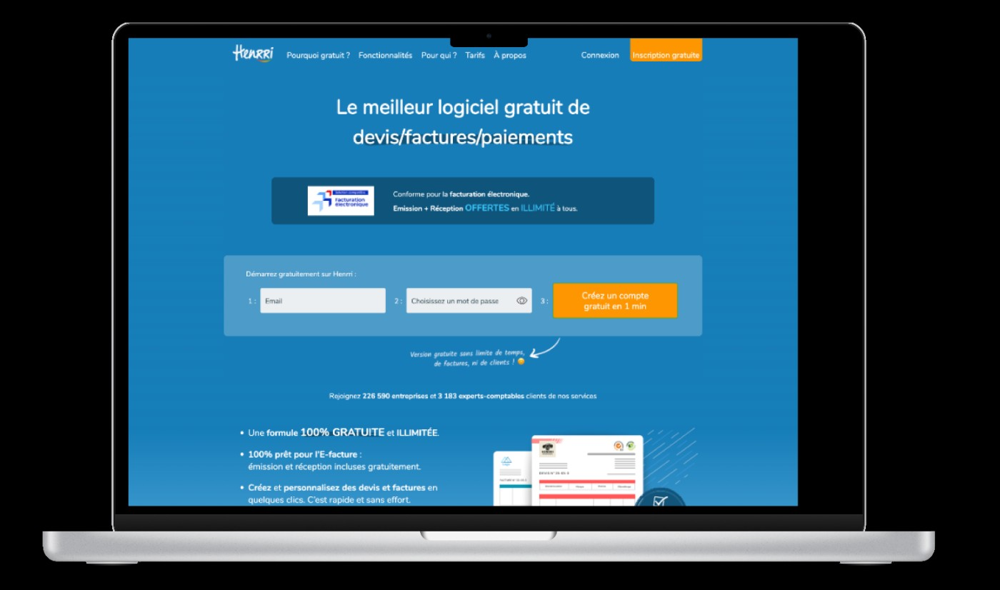

Une semaine, en distanciel, pour rendre la proposition de valeur d'un logiciel de facturation lisible en dix secondes.
Exercice interne confié par ma maître de stage : reprendre la page d'accueil d'un logiciel de facturation. Aucun client final, une contrainte de délai forte et un objectif unique — rendre la proposition de valeur compréhensible en dix secondes.
Audit de la page existante, restructuration de la hiérarchie de l'information, réduction de quatre appels à l'action concurrents à un seul, regroupement des sections selon les questions du visiteur, puis maquettes desktop et mobile.
Le format court impose de hiérarchiser rapidement et d'argumenter ses choix. J'ai appris à défendre trois décisions de conception face à une interlocutrice connaissant mieux le produit, et à intégrer un arbitrage défavorable.
